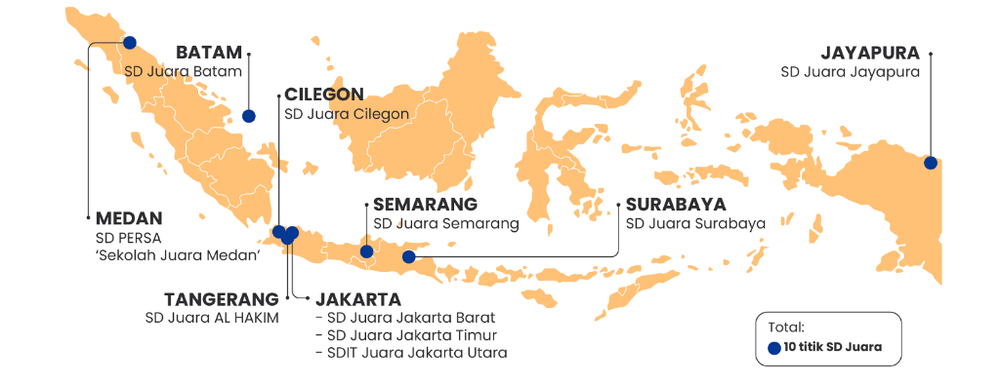

Peta Sebaran Sekolah Juara
Hadir di 10 titik strategis di berbagai penjuru nusantara untuk memperluas akses pendidikan berkualitas bagi anak bangsa.



Kurikulum Langit
Kurikulum Langit adalah kurikulum khas Sekolah Juara yang merupakan pengembangan dari Kurikulum nasional dan berfokus pada nilai-nilai karakter islami yang bersumber dari AlQur’an, Hadits dan Kitab-kitab Adab.
Kurikulum ini telah mendapatkan apresiasi dari Pusat Kurikulum (Puskur) Kementerian Pendidikan Dasar dan Menengah dengan menyebut bahwa “Kurikulum Langit” adalah kurikulum yang komprehensip karena dilaksanakan di sekolah, rumah dan lingkungan.
Tujuan dari Kurikulum Langit adalah mendidik manusia di bumi dengan kurikulum (dari) langit serta menghubungkan aktivitas siswa dengan wahyu Allah dan sunnah Nabi. Adapun metode yang digunakan dalam mengimplementasikan nilai-nilai karakternya meliputi keteladanan, pemahaman nilai, pembiasaan dan penegakkan aturan.
Kurikulum ini terdiri dari nilai-nilai karakter 7 Habits Juara dan 12 Adab Juara yang isinya adalah adab-adab yang sesuai dengan ajaran Islam serta selaras dengan budaya bangsa. Selain itu didukung dengan adanya modul untuk siswa, modul untuk pegangan guru, artefak karakter serta buku KOMPAK (Komunikasi dan Prestasi Anak).
Tujuh kebiasaan utama yang ditanamkan sejak dini untuk melatih kedisiplinan, kemandirian, dan ketakwaan siswa.
Bangun Sebelum Shubuh
Shalat Tepat Waktu
Dzikir
Birul Walidain
Santun dalam Bergaul dan Berbicara
Bersungguh-sungguh dalam Belajar
Mandiri dalam Beraktivitas
Dua belas nilai adab mulia yang ditanamkan secara konsisten untuk membentuk pribadi siswa yang santun, tertib, dan berakhlak terpuji.
Adab Wudhu
Adab Shalat
Adab Kepada Orang Tua & Guru
Adab Menjaga Aurat
Adab Sesama Teman
Adab Bersama Al Quran
Adab Belajar
Adab Penggunaan Gawai/Ponsel
Adab Dalam Bertanggung Jawab
Adab Berbicara
Adab Makan & Minum
Adab di Kamar Mandi
Pilar pengasuhan dan keteladanan orang tua untuk menumbuhkan fitrah anak melalui kehangatan kasih sayang dan transfer ilmu yang berharga.
Memeluk Anak
Menghadirkan rasa aman, kedekatan emosional, dan rasa percaya diri melalui pelukan hangat orang tua setiap hari.
Mencium Anak
Mengalirkan kasih sayang, doa kebaikan, dan kelembutan fitrah melalui ciuman penuh cinta di kening dan pipi anak.
Berbagi Ilmu
Membangun kedekatan literasi dan transfer hikmah melalui kisah teladan, membaca buku bersama, dan nasihat bijak.